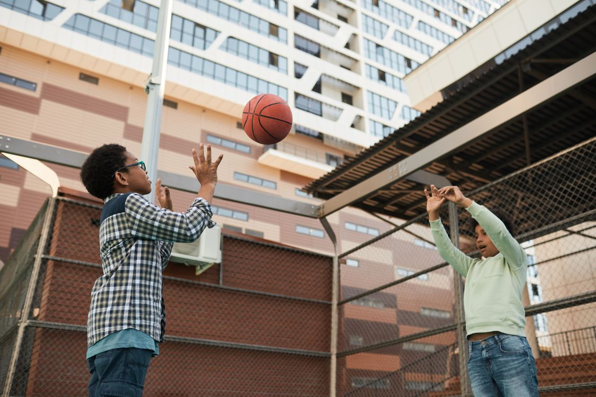
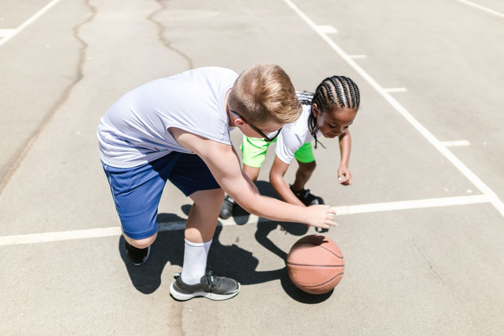

Feb. 20, 2026
Every winter, a familiar scene unfolds in gyms all over America. The lights hum to life, the bleachers fill up, and a group of teenagers in matching warm-ups bursts onto the court, greeted by a student section that's been eagerly anticipating this moment all week. While football claims the fall and baseball takes over the spring, boys' basketball firmly holds the winter season — and judging by the numbers, it's not letting go anytime soon. Here in the Bay Area, where outdoor courts are bustling even in January and high school gyms are packed on Friday nights, basketball feels less like just a game and more like a shared language that everyone learns to speak.

Basketball doesn't need flashy promotions; it has the stats to back it up. According to the national participation survey for 2024–25, a whopping 540,704 boys participated in high school basketball across the United States, making it the third most popular boys' sport, trailing only behind 11-player football and outdoor track and field. With over 18,000 schools fielding boys' teams, this sport isn't limited to just a few hotspots — it's everywhere, from bustling city programs with dedicated coaches to small schools where the basketball coach also teaches history and drives the team bus. California, ranking just behind Texas in overall athletic participation, plays a significant role in this landscape, showcasing a faster, more modern style of play. In fact, California is one of the states that employs a shot clock in high school basketball, meaning Bay Area teens grow up facing the same pressure to make quick shots that college players do.

Locally, the pipeline is easy to see. Elementary school leagues feed into middle school teams, which feed into high school programs that range from small Division V schools to national-level powers. On weekends, regional club tournaments pack gym complexes from San Jose to Oakland, and the outdoor game never really stops — the same mild weather that makes the Bay Area famous keeps park courts playable twelve months a year. Add the shot clock, a deep pool of experienced coaches, and crowds that treat a Friday night rivalry game like a civic event, and it is no surprise the region keeps producing college players year after year.
Plenty of sports have boomed and faded. Basketball just keeps going, and the reasons are mostly practical. It is cheap to start: a ball, a pair of shoes, and any hoop will do — a driveway, a schoolyard, a park court with a chain net. It is easy to organize: three-on-three works, two-on-two works, and a single player can get a real workout alone, which is not true of most team sports. It fits the calendar: the school season runs through the winter when little else competes indoors, and club and AAU ball fill the spring and summer for boys who want more. And it scales with the player. The same game a seven-year-old plays on a lowered rim is, rule for rule, the game played in the NBA — few sports let a kid watch the pros on television and then go outside and imitate exactly what he saw.
The modern game also has something older generations never had: a shared instruction manual. USA Basketball and the NBA publish joint youth guidelines that tell leagues how the sport should be taught at each age. Younger boys play with smaller basketballs and lower rims — eight feet for ages 7–8, nine feet for ages 9–11 — so shooting form develops honestly instead of being heaved from the chest. Zone defenses are banned for the youngest groups so kids learn to guard a person, not a spot. Playing time is equal at the youngest levels, three-point shots are removed for little kids so they build range gradually, and the guidelines recommend delaying single-sport specialization until about age 14. Bay Area parents shopping for a first league can use those standards as a checklist: if a program follows them, it is probably teaching the game the right way.
Starting is simple. For young boys, pick a recreation league that follows the USA Basketball guidelines, with the right ball size and rim height for their age. For middle and high schoolers, school tryouts are the front door, and open-gym runs in the fall are where coaches first notice new players. Mix in other sports as long as possible — the guidelines are right that early specialization is a trap — and spend unstructured time on playground courts, where creativity and toughness are still taught best. A boy who can dribble with both hands, shoot with real form, and guard his man will find a place to play anywhere in the Bay Area.
For boys who fall hard for the game, the pathway is clearer than it has ever been. Strong high school seasons lead to college basketball at every level, from junior colleges and Division III programs to the Division I stage every kid dreams about. USA Basketball runs national events for club teams, including the U.S. Open Basketball Championships, where youth teams from around the country compete under the same age-verified standards. Most players, of course, will finish their careers in a high school uniform — and that is fine. The fitness, the friendships, and the experience of performing in a loud gym on a Friday night are worth having whether or not a scholarship ever comes.
Boys' basketball is not surviving on nostalgia. With more than half a million high school players, a national development system that finally teaches the game age by age, and regions like the Bay Area where the gym is a center of community life, it remains the winter sport to beat. The next season tips off soon — the bleachers are already waiting.
Image source: Pexels.